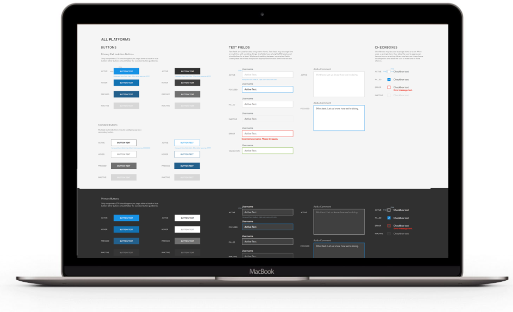
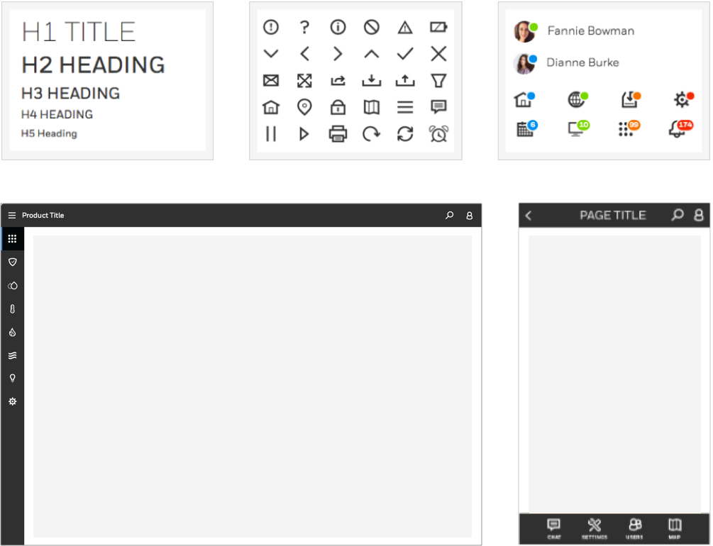
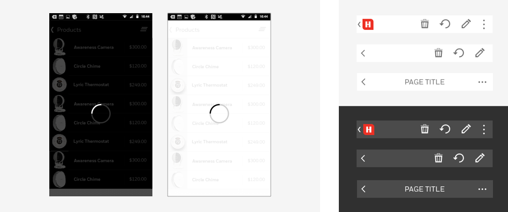

Honeywell, as a giant group of disparate businesses, did not have a consistent design language or style. Its brand was weakened by only having basic guidelines, no clear foundational principles, and no styleguide for its many web presences and software products.
Over the course of a few years, I collaborated with different teams across different businesses to create a set of guidelines and design assets for both the global and digital brand and styleguides.
I created Control Library of reusable Sketch components which could be reused by designers worldwide to efficiently use the DLS styles. I also collaborated with a team to create a greater set of guidelines and design assets in Sketch and ensured that they closely follow the DLS.
As the lead for the icons and typography, I established and documented guidelines for those categories. I also provided guidance and creative direction to ~20 designers in the international studios on the use and creation of icons for their individual projects. I created and distributed icon repositories for designers to increase consistency and efficiency.
With the goal of enabling consistency and consolidation of design frameworks, I worked closely with development teams to create reusable patterns, templates and code snippets as well as a web portal to house them and the brand and design guidelines. I played a core role in leadership and design strategy to create a set of guidelines for desktop and mobile software, web based apps and Marcom websites and examples of standard patterns and templates in order to show how different modules fit into a cohesive whole.
I additionally worked to gain consensus across the diverse needs and goals of Honeywell’s different businesses, Corporate, design and IT Teams to deliver a code library based on the new design language, in order to increase speed and consistency within software and development.
I designed new patterns and components and guidelines for the DLS portal in order to encourage consistency with evolving needs. This allowed us to speed up the product development cycles of team who did not have to reinvent the wheel when they had shared needs with other teams.
Accountable and responsible for the success of the design in the projects I've lead, I facilitated communication by leading design critiques and providing Creative Direction to teams, to ensure that the quality and consistency of design work met the high standards of our digital style. I mentored designers on best practices, and gave direction across disciplines to champion usercentered design and to make sure that the design intents were correctly conveyed and implemented.
Increased Productivity and Efficiency across design and development teams, allowing greater speed to market. Enabled greater consistency across products and websites in order to strengthen Honeywell’s overall brand.